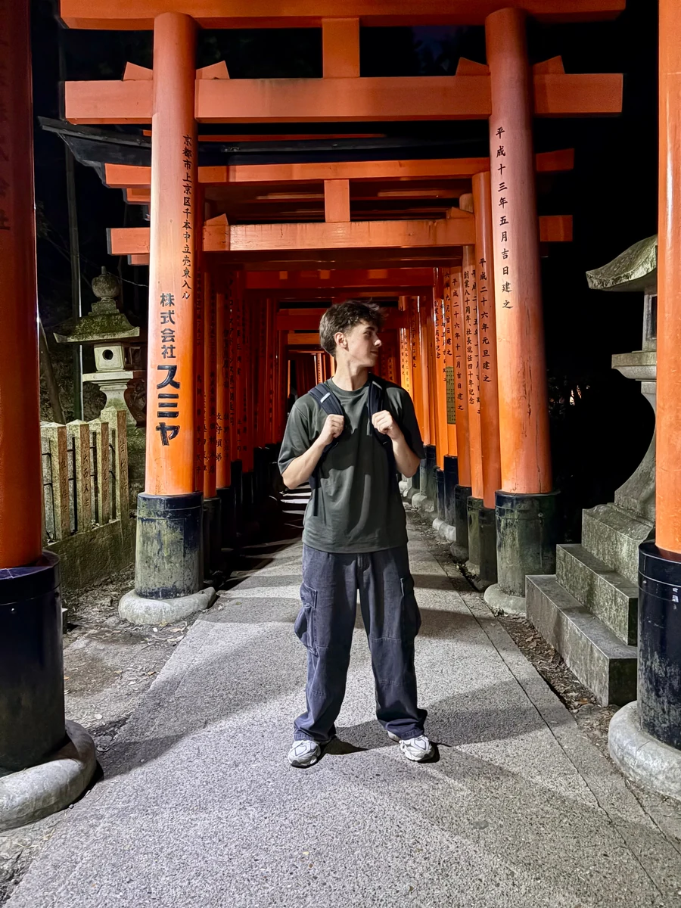
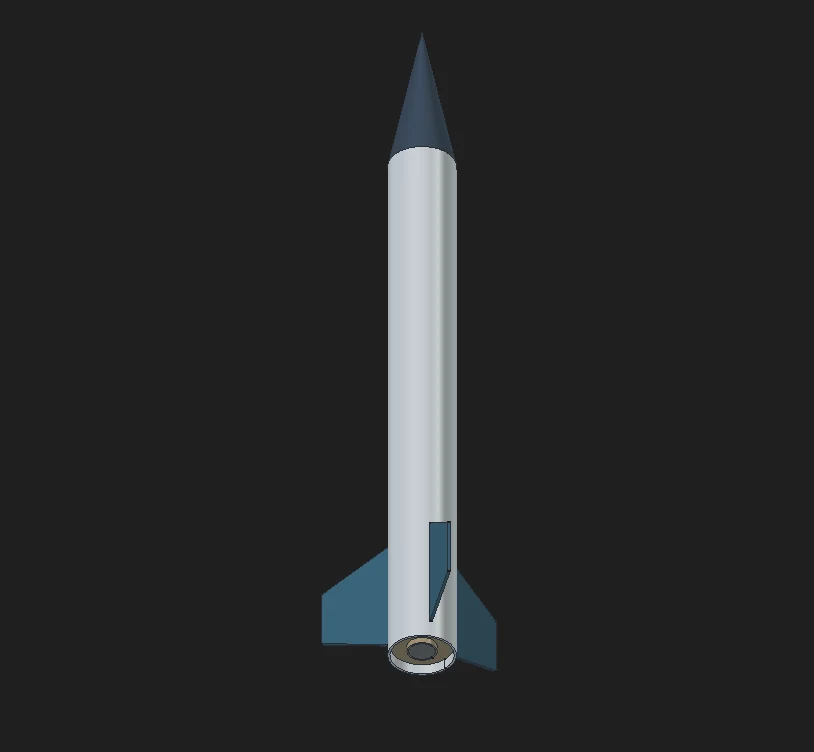
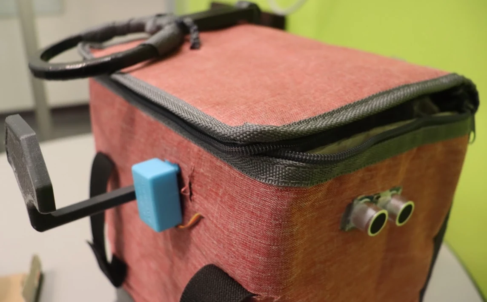
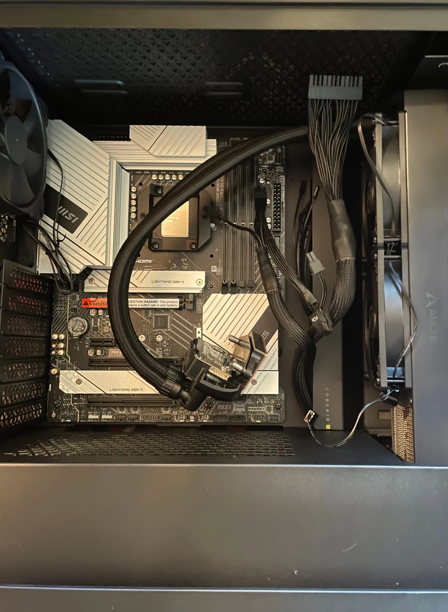

Python, Java, Arduino, C, C++
Python is my strongest language, supported by coursework and project experience across software and embedded systems.
Computer Engineering · McMaster University
Second-year computer engineering student building where code and hardware meet, with an interest in rocketry and embedded systems.

01 · About
I’m a Computer Engineering student from Burlington, Ontario, interested in systems where software has to work with real hardware.
At McMaster, I’m building a foundation in programming, CAD, electronics, and collaborative engineering. I enjoy taking an idea from an early sketch through modelling, testing, and troubleshooting.
Outside coursework, I’ve been exploring rocketry and spacecraft technology through a parametric model-rocket project using FreeCAD, Python, and OpenRocket. I've always had an interest in space exploration and through engineering have become particularly fascinated in sensing, telemetry, controls, and other embedded systems that support larger engineering projects.
I also enjoy building PCs, gaming, and creating short films — giving me another way to combine technical problem-solving with careful design.
02 · Skills
Python is my strongest language, supported by coursework and project experience across software and embedded systems.
Mechanical modelling, parametric design, and fabrication planning, with basic introductory familiarity in Onshape.
Hands-on integration of electronics and mechanisms, including prototyping and troubleshooting.
Directing, shooting, and editing short films from initial concept through final delivery.
03 · Experience
Burlington Mobile Detailing · Burlington, ON
Managed marketing, customer outreach, bookkeeping, scheduling, and daily operations alongside a co-founder.
Nelson High School · Burlington, ON
Tutored Functions, Physics, Chemistry, and Computer Science while independently managing multiple weekly students.
City of Burlington
Taught children ages 6–10 to play saxophone and coordinated with leaders, management, and caregivers.
04 · Projects

Created a partially scripted model rocket with a hollow airframe, avionics-sled mockup, motor envelope, centering rings, and three-fin layout. Recreated it in OpenRocket to study mass, centre of gravity and pressure, and static stability, then wrote a Python validation script.

Designed a storage system for a wheelchair user with limited hand dexterity. An ultrasonic sensor triggers a servo-powered latch so the bag can be opened without forceful hand movement.
View project page
Selected compatible components, assembled and wired the system, planned cooling, manually flashed firmware update to motherboard while trouble shooting, and overclocked and optimized the OS for performance.
05 · Recognition